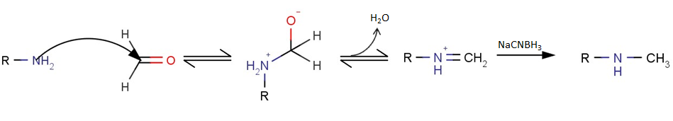
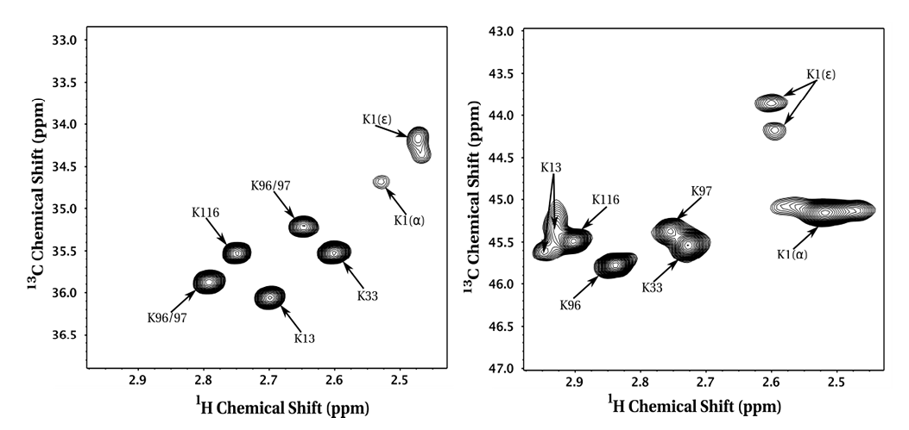

Reductive methylation (a type of reductive amination), is a chemical reaction whereby an aldehyde or ketone are converted to an amine via an imine intermediate. It is an important reaction in the manufacture of pharmaceuticals and other products.
A general reaction scheme for reductive methylation is shown below, whereby a primary amine is mono-methylated to yield a secondary methylamine.

Figure 1. General reaction scheme for reductive amination of a primary amine using sodium cyanoborohydride as the reducing agent.
Note that this reaction can be conducted under aqueous conditions using the appropriate reducing agent and is therefore an excellent bioconjugation reaction. The reaction is high-yielding and simple to perform at small scale making it suitable for functionally modifying proteins and other biomacromolecules.
Interestingly, reductive methylation will also work on secondary amines, thereby generating the corresponding tertiary amine - as such reductively methylated proteins tend to have all amino groups (N-terminal amines and lysine side chain amino groups) fully dimethylated.
For example, reductive methylation of hen egg white lysozyme with 13C formaldehyde can be used to spectroscopically fingerprint each lysine and N-terminal amino group by NMR (13C HSQC), thereby allowing one to probe conformational changes in response to pH changes, temperature, pressure, or functional states (i.e. salt-bridge).

Figure 1. Mono- and di-methyllysine NMR spectra for reductively methylated hen egg white lysozyme (J Biomol NMR. 2012 Oct;54(2):199-209).
When it comes to bioconjugation or any type of covalent modification technique applied to proteins, the biochemist should always consider how the chemical modification affects the structure and/or function of the modified protein.
Because many biophysical techniques require labeling (fluorophore), or tethering onto a chip or surface (SPR, AFM), it is prudent to be aware of how small chemical modifications can have profound impacts on protein conformation, dynamics and function (more on this in a separate post). Some fluorophores tend to be quite large and hydrophobic and will undoutedly affect conformation, stability, or function if the protein is chemically modified to a high degree. The dynamic considerations of chemical modification are almost always overlooked even though they are often quite important for function.
Reductive methylation, however, is one of the most well-tolerated functional modifications that can be performed on proteins. Mono-methylation results in a significant increase in the pKa of each amino group but further modification to the dimethylated protein returns the pKa to a level close to the original pKa of the unmodified amine. Some differences in function and structure are still observed even for such a well-tolerated chemical labeling approach.
Below is a comparison of the backbone structures for reductively methylated and native hen egg white lysozyme. The backbone RMSD is 0.35, indicating that methylation has minimally perturbed the protein.

Figure 2. Backbone and Lysine Side chain comparison for non-methylated lysozyme (magenta, PDB: 193L) vs reductively methlated lysozyme (cyan, PDB: 132L).
Select lysine (and dimethyllysine) residues are shown as sticks (notice in the cyan structure the additional methyl groups on each amine).
References:
1. J Biomol NMR. 2012 Oct;54(2):199-209